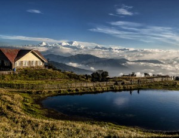

Saltoro Kangri is the fourth highest mountain peak of Himalayan range located in India and has a height of 7,742 m (25,400 ft). Furthermore, it is also the 31st highest mountain peak in the world. Saltoro Kangri has four sections all of which are higher than 7000m.  Location: Jammu & Kashmir Saltoro Mountains are situated at the center of great Karakoram and very near to the longest glaciers in the world, the Siachen Glacier.